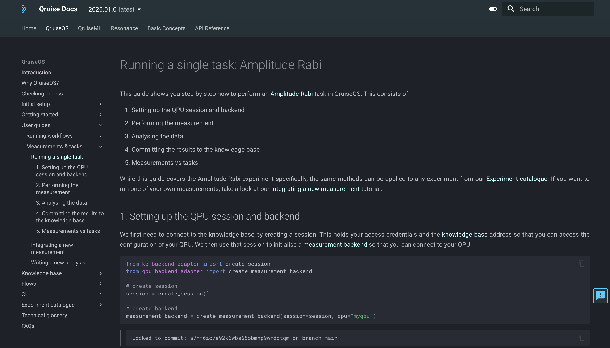

Technical and scientific writer specialising in quantum computing software, with a PhD in materials science and photonics.
Since the beginning of 2024, I have been the sole technical writer at Qruise, a company developing software to accelerate scientific research, with a strong focus on quantum computing.
In this role, I am responsible for the company’s public-facing technical documentation, including:
I write and maintain all documentation in Git using Markdown, developing examples and workflows in Python notebooks where appropriate.
You can find Qruise’s public documentation here. Below, I’ve selected a small number of representative examples:
Qubit-qubit coupling (fixed coupler)
Simulation & optimal control of a single-qubit gate in an NV quantum processor
